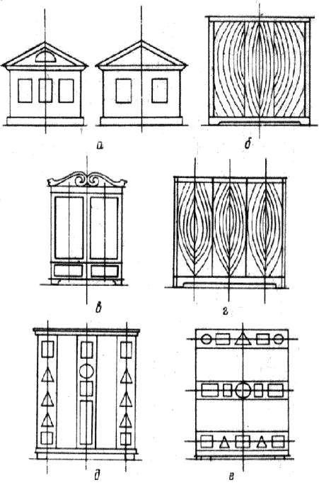
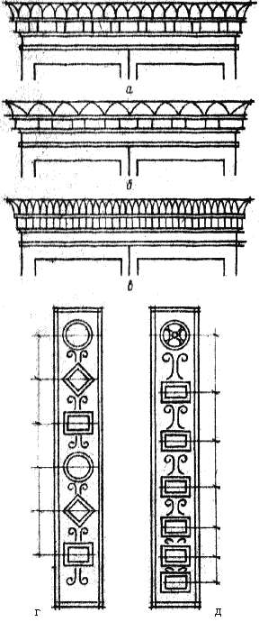

Ритм, симметрия, подобия.

Если анализировать любую совершенную композицию вещи или предмета, картины, скульптуры, всегда можно найти в ней ряд линий геометрической формы, взаимно увязанных между собой в определенную систему (треугольник, прямоугольник, круг). По этим линиям и фигурам располагаются различные детали композиции, именно они часто определяют форму композиции, ее границы. Некоторые геометрические фигуры обладают большей выразительностью по сравнению с другими. Основано это на их природном качестве, связанном с симметрией.
Фигуры с центральной симметрией (круг, квадрат) и центрально-угловой (розетки) наиболее выразительны; фигуры, имеющие только осевую симметрию, следуют за ними, на последнем месте в этом отношении находятся фигуры произвольной формы.
Выразительность композиционного решения повышает использование системы осей, относительно которых в изделии возникает уравновешенность или симметрия.

Рис. 16. Использование осей для усиления композиционной выразительности предмета: а, б – одноосевая композиция; в – двухосевая; г, д, е – трехосевые
В мебельных изделиях наибольшее значение имеют вертикальные ocи, подчеркивающие устойчивость предмета. При нечетном количестве вертикальных осей (три, пять) композиция собирается к центру и становится более цельной; при четном (две, четыре) – связь элементов получается значительно меньшей, приходится вводить объединяющие детали (общее обрамление, карниз, цоколь и т. п.). Так, дом с фронтоном и тремя окнами по фасаду интереснее и выразительнее такого же дома, но с двумя фасадными проемами; в однопольной двери неуместно наличие двух осей. Сила осей повышается с введением полной зеркальной симметрии или таких форм, в которых ось мысленно может быть проведена (круг, эллипс, арка).
Ось предмета может присутствовать в изображениях и формах как геометрических, симметричных, так и в произвольных. Определяется положение такой оси путем зрительного разделения видимого абриса изображения предмета на два равноценных по площади участка.
Композиционную ось не следует понимать буквально в виде линии, каким-либо образом обязанной присутствовать на поверхности предмета, например в виде линии стыка шпона симметричной фигуры, выполненной в технике маркетри. Ось, о которой идет речь, мысленная, ее существование определяется наличием фигур, так или иначе тяготеющих к такой воображаемой линии и создающих ощущение оси за счет количественного равенства деталей или узора по обе стороны от нее. Если ось слишком отчетливо будет выявлена в натуре, то общая композиция может развалиться на две мало связанные между собой части. Это можно наблюдать при оклеивании щита шпоном «в елку».
Если оси часто повторяются, возникает ритм. Ритмичные повторения чрезвычайно характерны для мебельных изделий. Основная композиционная задача при использовании ритма: выбрать частоту повторения в заданном размере так, чтобы повторение усиливало выразительность, а повторяющийся элемент естественно вписывался бы в композиционную схему.
Чрезмерно частый ритм измельчает деталь, делает ее неубедительной.
Ритм необязательно должен быть равномерным и равнозначным. Чередующиеся детали одного характера могут иметь разную форму при одинаковых расстояниях до их зрительных центров, а при одинаковых деталях расстояния могут изменяться. Этот прием используется при необходимости направить внимание зрителя к главной части композиции. Ощущение ритма появляется только при наличии не менее трех повторений.

Рис. 17. Использование ритма в композиции: а, б, в – ритмические членения карниза; г – разные формы с одинаковым ритмом; д – одинаковые формы с развивающимся ритмом
Размер прорабатываемой поверхности предмета или орнамента на выбор количества осей и частоту повторяющихся деталей оказывает мело влияния. И в шкатулке и в стенке шкафа их может быть одинаковое количество, основное влияние здесь оказывает масштабность частей, соединяемых в единую композицию.
Краевые элементы, участвующие в ритме, должны отличаться от рядовых.
Для повышения выразительности композиции часто используют принцип подобия, при котором фигуры меньшего размера собираются вокруг большой фигуры той же формы. На этом принципе построены очень многие орнаменты. Глазу кажется естественным сочетание подобных фигур.